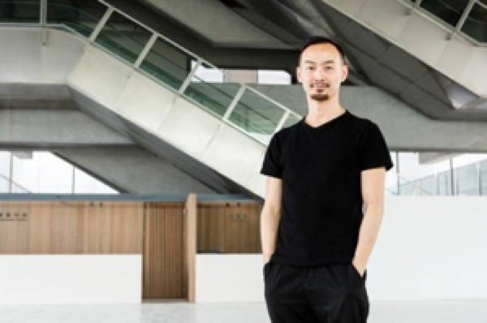

入圍作品
入圍理由
得獎理由
小姐免驚
林素蓮
編舞家孫尚綺的《透明》除了重新釐定展覽與表演之疆界，包括場域與形式、觀看與被觀看之關係，孫尚綺和他傑出的舞者們以最本質的元素─身體，向人們展示了舞蹈的力量、想像、與思考性，以及身體的強大表述能力，激發出觀者豐盛的聯想，同時印證了：舞蹈，只要有光、有一方空間，就能無所不能的真理。(主筆／張曉雄)
展演日期：2019.12.17- 12.25
地點：國家表演藝術中心 兩廳院實驗劇場

訪談影片
敬請期待
關於作品
藝術家訪談
相關評論與報導
作品簡介
《透明》選自臺北市立美術館特展《社交場》
《透明》選自臺北市立美術館特展《社交場》，藉由思考透明狀態的表現轉換過程，探索或拆解符號和人文關懷與地域空間相聯繫的流轉遷移，並實驗「展覽」和「表演」之間的共生關係。編舞家孫尚綺說，透明是個概念，這個概念是很單純的去試驗在生活中的物件和符號帶給人們的影響，進而反思，整理舊有的思維脈絡。
作品演出的框架是由概念文字來建立音樂、舞蹈、言說等動態的擾動，並思索表現動能和靜態生活之間的關係。展演期間，每一場表演的內容都有不同的細節設定與互動可能性，作品因而隨著時間的推進，在穿透的流動樣態中持續生成轉變。空間裡有預設的情節基底，建立表演者之間的互動密度。它不僅是編舞，也是身體形態的變形、變態，身軀和器官之間的對話。同時，在介於私密空間和大眾交際的場域中，以滲透引動的音聲節奏摸索虛實共融的無形界線，並藉由舞蹈劇場肢體的表演性，與空間中近距離依存的觀眾創造的透明而奇異的對應關係，共同思索當代世界關於共生的想像或困境。
藝術家簡介
孫尚綺，旅德編舞及舞蹈家，曾榮獲2008年德國斯圖加特國際獨舞藝術節編舞金獎，以及紐倫堡IHK文化基金會的巴伐利亞邦劇場與文學獎。2011年獨舞作品《穿越》被 Aerowaves 歐洲舞蹈網絡選為歐洲年度最佳作品。2007年孫尚綺創立崎動力舞蹈劇場，結合不同領域的當代藝術家共同實驗創作，更融合自身的東方內涵與歐洲經驗，使作品呈現完美平衡的東西色彩。
製作團隊
概念、編導｜孫尚綺
音樂｜洪于雯
曲目導｜孫尚綺
舞蹈、集體創作｜拉亨曼《內部 I.》
展演製作｜陳武康 、劉怡君、Joel Suarez 、Ross Martinson、Shai Tamir
協力製作｜孫平
裝置製作協力｜黃本婷
演出執行｜崎動力舞蹈劇場

「『透明』是一種狀態的轉移過程，它和人們生活中的變遷與符號有關。」在臺北市立美術館特展《社交場－透明》中，編舞家孫尚綺藉由思考透明狀態的表現轉換過程，探索或拆解符號和人文關懷與地域空間相聯繫的流轉遷移，並實驗「展覽」和「表演」之間的共生關係。
「我只是很單純的去試驗生活中的物件和符號帶給人們的影響，藉由透明的呈現方式，讓觀眾進而反思，整理舊有的思維脈絡。」孫尚綺說，《透明》是一場沒有秘密的展演，它沒有傳統的鏡框式舞台，而是在一個特定的公共空間，公開讓觀看者檢視展覽中的每個細節，以及每一刻的狀態動向。它像個不限時間的展覽，但是每一天的內容會因為裝置、舞者、觀眾、音樂和光線的不同互動，而產生戲劇性的延長感，使觀眾不知不覺被引導，於是就成為一場「活的展覽」。
此次演出的框架是由概念文字來建立音樂、舞蹈、言說等動態的擾動，並思索表現動能和靜態生活之間的關係。孫尚綺在每一場表演開始之前，都會設定不同的細節與互動可能性，然後由團隊集體創作。隨著時間的推進，作品在穿透的流動樣態中持續生成轉變。
也因為空間裡有預設的情節基底，表演者之間便建立了互動密度，除了舞蹈之外，也呈現身體形態的變化，以及身軀和器官之間的對話。而在介於私密空間和大眾交際的場域中，以滲透引動的音聲節奏摸索虛實共融的無形界線，並藉由舞蹈劇場肢體的表演性，近距離與觀眾創造透明而奇異的對應關係，共同思索當代世界關於共生的想像或困境。
雖是編舞家，但孫尚綺對音樂卻滿懷熱情，對當今現代作曲家也瞭若指掌，過去曾使用極簡音樂大師菲利浦．葛拉斯（Philip Glass）和德國作曲家赫穆特．拉亨曼（Helmut
Lachenmann）作品編舞。對於孫尚綺來說，音樂不只是節奏和旋律，它是連繫身體和世界的知覺媒介。他認為音樂的本質是「sound」──聲音，如何去尋找對的聲音，比挑選音樂還重要。
「聲音與身體是互相輝映共存的，尤其在《透明》這個作品之中，音樂具有時間上的優越性，它符合轉換的概念，在空間、身體、物件的流轉之間，暗示不同世代和地域的文化背景。」孫尚綺說。
此次孫尚綺選擇了打擊樂作為聲音素材，因為他覺得北美館的場地與工業化的聲音是同屬性，而打擊樂是最接近工業化的聲音。打擊樂器的材質包括鋼鐵、銅片、木頭等，演奏者藉由敲打樂器來呼應建築物的結構，然後觀眾們憑著對聲音的知覺，去建立每個人在北美館空間的經驗。孫尚綺認為，打擊樂器的材質是庇護所的象徵，也是一種保護與避難的聲音，在舞作中顯示著權利和築牆劃界的弔詭，或許這樣的弔詭可以給我們距離，讓觀眾更客觀的思考「價值」的意義。
而此次音樂之所以選擇拉亨曼的作品《內部I.》（Interieur
I.）來貫穿整個透明概念，則是因為孫尚綺覺得它是「建築式」的音樂，複雜、抽象，但是極簡有力。這些點狀的聲音加強了空間與人的深度，也喚起大家對生活物件的記憶連結。
孫尚綺笑道，以前在編舞時，就對狀態的轉化與遷移十分感興趣，此次能與北美館合作發表這齣結合舞蹈、戲劇和美術館空間的作品，算是「玩」得很徹底。「所有的狀態都是一種轉換，沒有結果只有過程，讓創作回歸到它的本質。未來的創作，我還是會朝向公共空間領域繼續實驗下去。」。
- 放下執念，或者成為自由的奴隸：《還陽記》─Mudmim 2017/11/17
- 找回劇場與觀眾的連結《還陽記》─表演藝術評論台 2017/11/22
- 劇場新鄉土──《水中之屋》與《還陽記》中的空間與記憶─ARTALKS2017/11/30
- 看《還陽記》─ARTALKS2017/12/12